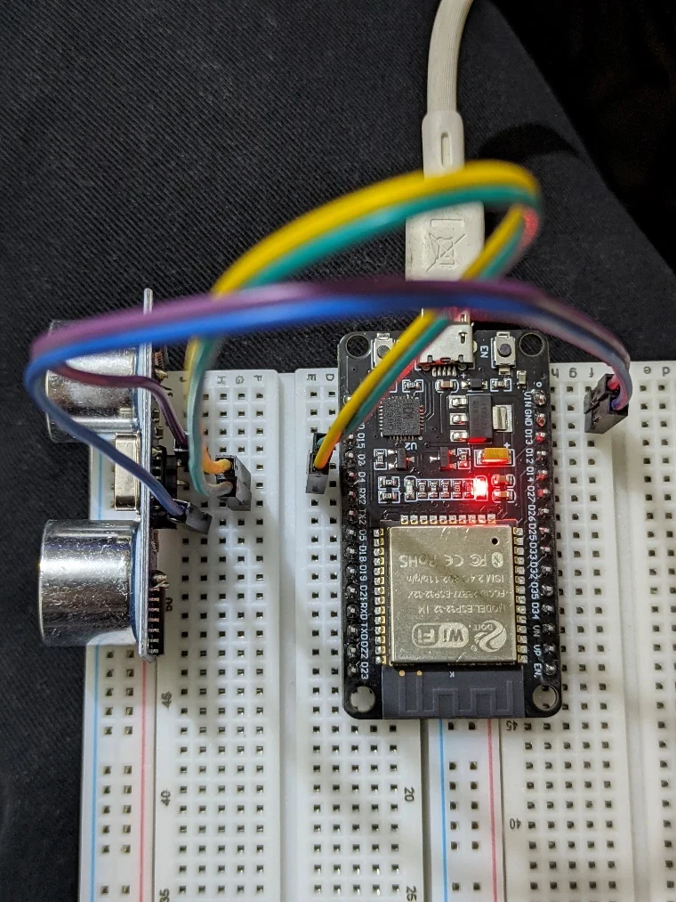
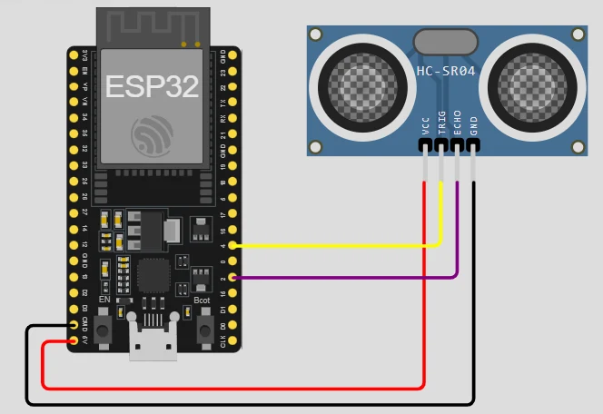
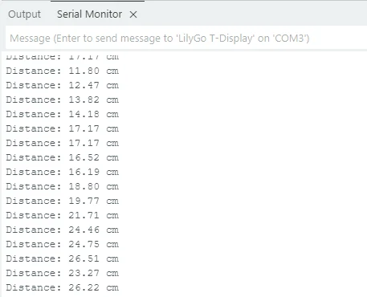

Final-year labs · 2026
ESP32 & IoT labs
In my final year in 2026, I used an ESP32 and an ultrasonic sensor to measure the distance to my hand. I checked the readings on the serial monitor and then logged them to a spreadsheet over Wi-Fi.
- Year
- 2026 · Final year
- Hardware
- ESP32 and HC-SR04 ultrasonic sensor
- Tools
- Arduino IDE and Google Apps Script


Enlarge imageBuilding on a simple output check
In earlier exercises I used an LED to see whether my wiring and timing behaved as expected. I used the same habit with the distance sensor. Before adding Wi-Fi, I wanted to see a sensible reading from the board itself.
From an echo to centimetres
Step 1 of 3
Connect the trigger and echo lines
For this exercise I used GPIO 4 to send the trigger and GPIO 2 to read the echo. The two signal lines have different jobs.


Enlarge imageStep 2 of 3
Time the echo’s round trip
My sketch sends a 10-microsecond trigger pulse and measures how long the echo pin stays high. I divide the sound’s round-trip distance by two to get the one-way distance to the object.
1,000 µs × 0.01715 cm/µs = 17.15 cm- TriggerSend a short pulse.
- EchoMeasure the return time in microseconds.
- DistanceMultiply by 0.01715 to estimate centimetres.
Step 3 of 3
Move a hand in front of the sensor
I moved my hand nearer and farther away and watched the centimetre readings change in the serial monitor. That gave me a local check before sending any data over Wi-Fi.


Enlarge imageGetting the measurement into a spreadsheet
In the next exercise, I sent the ESP32’s distance reading over Wi-Fi to a Google Apps Script web app. The script appended the value to a spreadsheet. I compared the sheet with the serial output to check the two ends of the path.
- SensorReturns the echo.
- ESP32Calculates and prints the distance.
- Wi-FiCarries the reading to Apps Script.
- SpreadsheetStores the new value.
Finding where a reading stops
Seeing a changing value in the serial monitor told me the board was already measuring distance. If that reading failed to appear in the spreadsheet, I knew to look next at the Wi-Fi request and the logging script.
Contact
Connect with me on LinkedIn or find more of my work on GitHub.